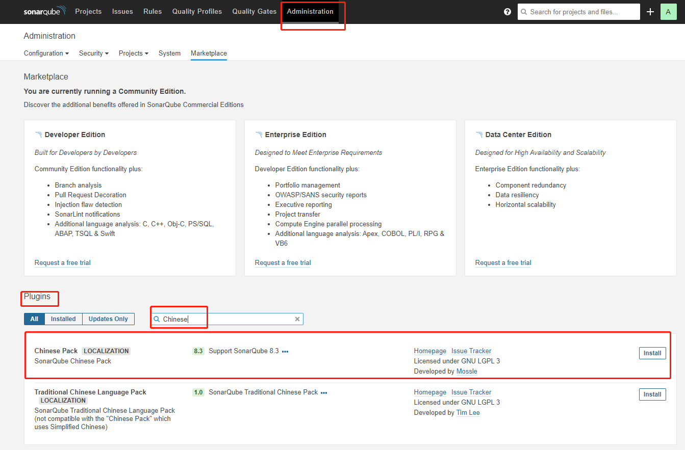
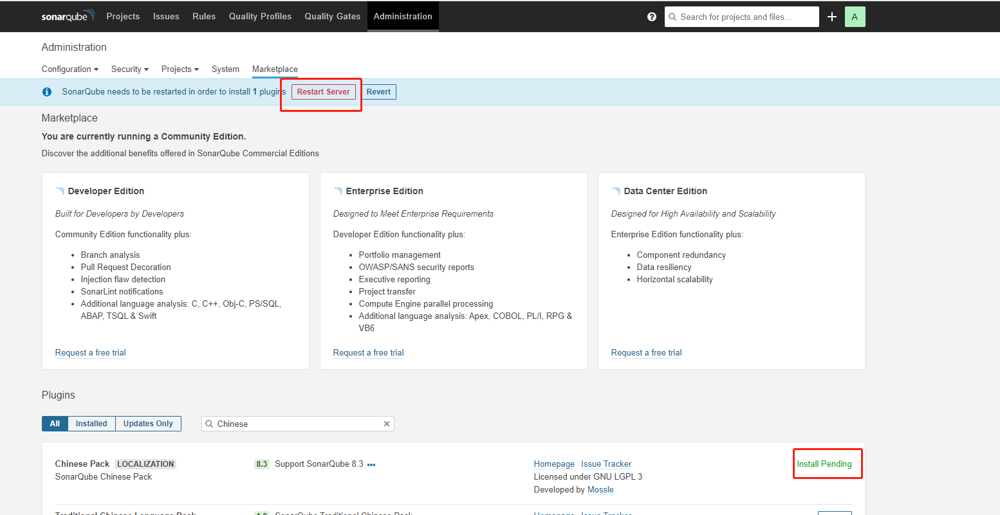

1 安装依赖
yum install -y epel-release unzip vim wget2 安装 OpenJDK
# 安装jdk
yum install -y java-11-openjdk java-11-openjdk-devel
# 查看jdk具体版本
ls -lh /usr/lib/jvm/配置环境变量
vim /etc/profile在文件最后添加如下内容：
export JAVA_HOME=/usr/lib/jvm/java-11-openjdk-11.0.7.10-4.el7_8.x86_64#{查看得知得版本}
export CLASSPATH=.:$JAVA_HOME/jre/lib/rt.jar:$JAVA_HOME/lib/dt.jar:$JAVA_HOME/lib/tools.jar
export PATH=$PATH:$JAVA_HOME/binsource /etc/profile3 安装并配置 PostgreSQL
3.1 安装 PostgreSQL 10
# 添加 PostgreSQL 10 yum源
yum install -y https://download.postgresql.org/pub/repos/yum/reporpms/EL-7-x86_64/pgdg-redhat-repo-latest.noarch.rpm
# 安装 PostgreSQL 10 服务
yum install -y postgresql10-server postgresql10
# 初始化数据库
/usr/pgsql-10/bin/postgresql-10-setup initdb3.2 编辑 pg_hba.conf
vim /var/lib/pgsql/10/data/pg_hba.conf内容如下：
# 将host all all 127.0.0.1/32 ident 改为：
host all all 127.0.0.1/32 md5
# 在文档后添加 下面一行开启远程连接
host all all 0.0.0.0/0 md53.3 编辑 postgresql.conf
vim /var/lib/pgsql/10/data/postgresql.conf
# 开启远程监听 listen_addresses = 'localhost' 改为如下内容
listen_addresses = '*'
port = 54323.4 启动 PostgreSQL 服务
# 启动
systemctl start postgresql-10
# 加载开机自启
systemctl enable postgresql-10
# 查看状态
systemctl status postgresql-10
# 查看端口监听
netstat -tulpn | grep 54323.5 sonarqube 数据库
为 SonarQube 创建 一个名为sonar的数据库和名为sonar，密码为sonar的管理员
sudo -u postgres psql;
# 创建数据库
CREATE DATABASE sonar;
# 创建管理员
CREATE USER sonar WITH ENCRYPTED PASSWORD 'sonar';
# 将数据库 sonar 授权给 sonar 进行管理
GRANT ALL PRIVILEGES ON DATABASE sonar TO sonar;
# 更改 sonar 的所有权
ALTER DATABASE sonar OWNER TO sonar;
\q4 安装并配置SonarQube
4.1 安装 SonarQube
wget https://binaries.sonarsource.com/Distribution/sonarqube/sonarqube-8.3.1.34397.zip
unzip sonarqube-8.3.1.34397.zip
mv sonarqube-8.3.1.34397 /usr/local/sonarqube-8.3.14.2 编辑 sonar.properties
vim /usr/local/sonarqube-8.3.1/conf/sonar.properties内容如下：
# 数据库（必需）
sonar.jdbc.username=sonar
sonar.jdbc.password=sonar
sonar.jdbc.url=jdbc:postgresql://localhost/sonar
sonar.jdbc.maxActive=60
sonar.jdbc.maxIdle=5
sonar.jdbc.minIdle=2
sonar.jdbc.maxWait=5000
sonar.jdbc.minEvictableIdleTimeMillis=600000
sonar.jdbc.timeBetweenEvictionRunsMillis=30000
sonar.jdbc.removeAbandoned=true
sonar.jdbc.removeAbandonedTimeout=60
# 网页服务（可选）
sonar.web.host=127.0.0.1
sonar.web.port=9000
sonar.web.javaOpts=-server -Xms512m -Xmx512m -XX:+HeapDumpOnOutOfMemoryError
sonar.search.javaOpts=-server -Xms512m -Xmx512m -XX:+HeapDumpOnOutOfMemoryError
sonar.ce.javaOpts=-server -Xms512m -Xmx512m -XX:+HeapDumpOnOutOfMemoryError
# LDAP（可选）
sonar.security.realm=LDAP
sonar.security.savePassword=true
sonar.authenticator.downcase = true
ldap.url=ldap://<ldap-server>.zone24x7.lk:389
ldap.bindDn=<ldap-user>@zone24x7.lk
ldap.bindPassword=<ldap-password>
ldap.user.baseDn=dc=zone24x7,dc=lk
ldap.user.request=(&(objectClass=User)(sAMAccountName={login}))
ldap.user.realNameAttribute=cn
ldap.user.emailAttribute=mail5 安装并配置 sonar-scanner
5.1 安装 sonar-scanner
wget https://binaries.sonarsource.com/Distribution/sonar-scanner-cli/sonar-scanner-cli-4.3.0.2102-linux.zip
unzip sonar-scanner-cli-4.3.0.2102-linux.zip
mv sonar-scanner-4.3.0.2102-linux/ /usr/local/sonar-scanner-4.3.05.2 配置 sonar-scanner
vim /usr/local/sonar-scanner-4.3.0/conf/sonar-scanner.properties内容如下：
sonar.host.url=http://localhost:9000
sonar.sourceEncoding=UTF-86 配置 sonar 账号
useradd --system --no-create-home sonar
chown -R sonar:sonar /usr/local/sonarqube-8.3.1
chown -R sonar:sonar /usr/local/sonar-scanner-4.3.07 创建sonar.service管理 sonar
vim /etc/systemd/system/sonar.service内容如下：
[Unit]
Description=SonarQube Server
After=syslog.target network.target
[Service]
Type=forking
ExecStart=/usr/local/sonarqube-8.3.1/bin/linux-x86-64/sonar.sh start
ExecStop=/usr/local/sonarqube-8.3.1/bin/linux-x86-64/sonar.sh stop
LimitNOFILE=65536
LimitNPROC=4096
User=sonar
Group=sonar
Restart=on-failure
[Install]
WantedBy=multi-user.target8 修改 sysctl.conf
# 查找 xx-sysctl.conf,结果一般为：00-sysctl.conf或者99-sysctl.conf等
ls /etc/sysctl.d/
# 修改 xx-sysctl.conf
vim /etc/sysctl.d/xx-sysctl.conf
# 在文后添加如下一行：
vm.max_map_count = 262144
# 加载改动
sudo sysctl -p /etc/sysctl.d/xx-sysctl.conf9 启动 SonarQube 服务
# 加载服务
sudo systemctl daemon-reload
# 启动服务
sudo systemctl start sonar.service
# 开机自启
sudo systemctl enable sonar.service
# 查看服务状态
sudo systemctl status sonar.service
# 检查端口占用
netstat -tulpn | grep 900010 登录并安装汉化插件
默认用户以及密码：admin/admin


转载请注明来源，欢迎对文章中的引用来源进行考证，欢迎指出任何有错误或不够清晰的表达。可以在下面评论区评论，也可以邮件至 jiang4yu@126.com